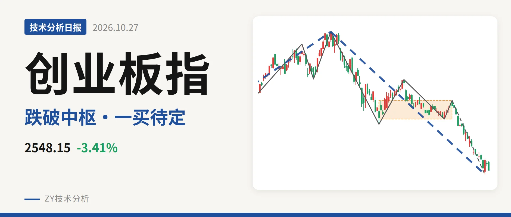
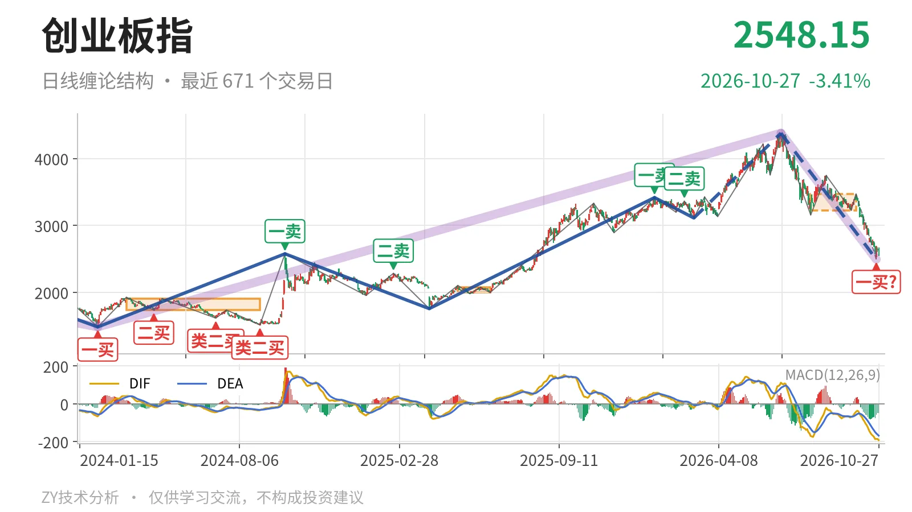
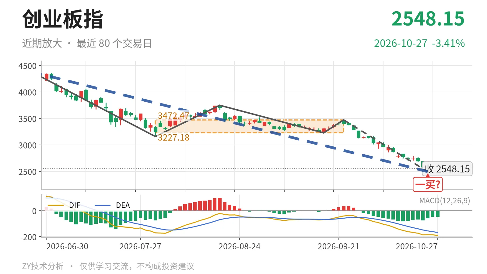

创业板指｜跌破日线中枢，暂定一买2494

最近日线中枢 3227.18—3472.47点，收盘位于中枢之下
一句话：日线下跌段未改，10月23日暂定一买待回抽验证
📉 走势结构：更大级别上涨未坏，日线下跌段延续
当前日线处于6月25日以来的下跌段中，且已经跌破最近日线笔中枢。更大级别看，2024年2月5日1482.99点到2026年6月25日4380.41点的上涨段没有结束。但6月25日至10月23日的下跌段同样还在延续，累计下跌约43.1%。这使短期不能按上涨中继处理，只能先看下跌段延续。日线线段层面，3月9日至6月25日的上涨线段没有走完，内部却被这笔下跌直接拉回，说明回撤力度不小。

📊 中枢与位置：跌破最近日线中枢，低于下沿约21%
最新收盘2548.15点位于最近日线笔中枢下方，不是围绕中枢震荡。最近日线笔中枢为7月30日至9月22日的 3227.18—3472.47点，中轴3349.83点，该中枢尚未完成，最新价已低于下沿约21%。下方还有2022年4月27日至2023年8月4日的线段中枢2122.32—2282.65点，当前价仍在其上方，所以更大级别上涨结构暂未被完全破坏。中枢结构目前是上移后向下离开，还不是连续下移。
🧭 买卖点：10月23日一买暂定，此前卖点一个比一个低
最近一个结构性买点是10月23日的 2494.22点一买，但它只能按暂定的一买看。它所在的9月22日至10月23日下跌笔仍在延续，因此这个一买会随该笔是否继续向下而变化。10月26日至27日虽有反弹，最高2671.81点、最低2548.11点，但2根K线尚未成笔，不改下跌笔延续。此前1月13日3416.84点的一卖、2月25日3363.18点的二卖，位置一个比一个低，日线顶部在年初已经形成。在暂定一买被后续向上笔破坏前，只把它看作下跌段内部的弱平衡位置。

⚖️ 背驰：绿柱收缩但DIF新低，底背驰不成立
最后一笔下跌没有出现有效底背驰。对比6月25日至7月30日与9月22日至10月23日两段下跌笔：前一段从4380.41点跌到3158.14点，绿柱面积1837，DIF低点-171.1；后一段从3472.47点跌到2494.22点，绿柱面积842，比前者小，但DIF低点-186.3比前者低。最新日线MACD仍在零轴下，DIF -191.7、DEA -168.1，绿柱未收。价格新低、DIF也新低，不符合“新低不新弱”，因此不是底背驰。当前段还在延续，绿柱面积仍可能变化，背驰只能等这段结束后再定性。
🧱 关键位置观察：反抽看3227点，站不上则构成三卖
短期强弱看对 3227点附近 的回抽。最近日线笔中枢下沿为3227.18点，当前价格低于该位约21%；若后续反抽回不到3227点上方，就构成该中枢的三卖，下跌段就有延续条件。若重新回到3227点上方，则这次向下离开更可能是中枢扩展，而非单边下跌。下方观察位看2283点一线，即2022年4月27日至2023年8月4日线段中枢上沿2282.65点附近；运行在该位置上方，更大级别上涨结构还不算被破坏。整体偏弱，弱在收盘位于中枢下方且没有底背驰。
⚠️ 本文为基于公开行情数据的缠论技术结构记录，由程序自动计算并生成，仅供学习交流，不构成任何投资建议。市场有风险，投资需谨慎。